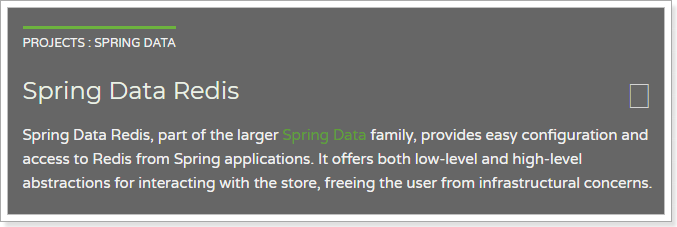

1.实现数据同步
接下来，我们就改造项目，实现搜索服务、商品静态页的数据同步。
1.1.思路分析
发送方：商品微服务
什么时候发？
当商品服务对商品进行写操作：增、删、改的时候，需要发送一条消息，通知其它服务。
发送什么内容？
对商品的增删改时其它服务可能需要新的商品数据，但是如果消息内容中包含全部商品信息，数据量太大，而且并不是每个服务都需要全部的信息。因此我们只发送商品id，其它服务可以根据id查询自己需要的信息。
接收方：搜索微服务、静态页微服务
接收消息后如何处理？
- 搜索微服务：
- 增/改：添加新的数据到索引库
- 删：删除索引库数据
- 静态页微服务：
- 增：创建新的静态页
- 删：删除原来的静态页
- 改：创建新的静态页并删除原来的
1.2.商品服务发送消息（ly-item-service）
我们先在商品微服务ly-item-service中实现发送消息。
1.2.1.引入依赖
1 | <dependency> |
1.2.2.配置文件
我们在application.yml中添加一些有关RabbitMQ的配置：
1 | spring: |
- template：有关
AmqpTemplate的配置- retry：失败重试
- enabled：开启失败重试
- initial-interval：第一次重试的间隔时长
- max-interval：最长重试间隔，超过这个间隔将不再重试
- multiplier：下次重试间隔的倍数，此处是2即下次重试间隔是上次的2倍
- exchange：缺省的交换机名称，此处配置后，发送消息如果不指定交换机就会使用这个
- retry：失败重试
- publisher-confirms：生产者确认机制，确保消息会正确发送，如果发送失败会有错误回执，从而触发重试
1.2.3.改造GoodsService
在GoodsService中封装一个发送消息到mq的方法：
1 | private void sendMessage(Long id, String type){ |
这里没有指定交换机，因此默认发送到了配置中的：ly.item.exchange
注意：这里要把所有异常都try起来，不能让消息的发送影响到正常的业务逻辑
然后在新增的时候调用：

修改的时候调用：
1.3.搜索服务接收消息（ly-search）
搜索服务接收到消息后要做的事情：
- 增：添加新的数据到索引库
- 删：删除索引库数据
- 改：修改索引库数据
因为索引库的新增和修改方法是合二为一的，因此我们可以将这两类消息一同处理，删除另外处理。
1.3.1.引入依赖
1 | <dependency> |
1.3.2.添加配置
1 | spring: |
这里只是接收消息而不发送，所以不用配置template相关内容。
1.3.3.编写监听器

代码：
1 |
|
1.3.4.编写创建和删除索引方法
这里因为要创建和删除索引，我们需要在SearchService中拓展两个方法，创建和删除索引：
1 | /** |
创建索引的方法可以从之前导入数据的测试类中拷贝和改造。
1.4.静态页服务接收消息（ly-page）
商品静态页服务接收到消息后的处理：
- 增：创建新的静态页
- 删：删除原来的静态页
- 改：创建新的静态页并删除原来的
不过，我们编写的创建静态页的方法也具备覆盖以前页面的功能，因此：增和改的消息可以放在一个方法中处理，删除消息放在另一个方法处理。
1.4.1.引入依赖
1 | <dependency> |
1.4.2.添加配置
1 | spring: |
这里只是接收消息而不发送，所以不用配置template相关内容。
1.4.3.编写监听器

代码：
1 |
|
1.4.4.添加删除页面方法
1 | /** |
1.5.测试
1.5.1.查看RabbitMQ控制台
重新启动项目，并且登录RabbitMQ管理界面：http://192.168.25.128:15672
可以看到，交换机已经创建出来了：

队列也已经创建完毕：

并且队列都已经绑定到交换机：

1.5.2.修改数据试一试
在后台修改商品数据的价格，分别在搜索及商品详情页查看是否统一。
2.Redis回顾
完成商品详情展示，下一步自然是购物车，不过购物车之前要完成用户注册和登入业务，我们需要使用到redis技术，一起回顾下
2.1.NoSql
Redis是目前非常流行的一款NoSql数据库。
什么事NoSql

常见的NoSql产品

2.2.Redis的介绍和安装
2.2.1.简介
Redis的网址：
官网：
中文网站：http://www.redis.cn/
历史：

特性：

2.2.2.Redis与Memcache
Redis和Memcache是目前非常流行的两种NoSql数据库，都可以用于服务端缓存。两者有怎么样差异？
实现来看
- redis：单线程
- Memcache：多线程
从存储方式来看：
- redis：支持数据持久化和主从备份，数据更安全
- Memcache：数据存在内存，没有持久化功能
从功能来看：
- redis：除了基本的k-v结构外，支持多种其他复杂结构，事务等高级功能
- Memcache：只支持基本的k-v结构
- 从可用性看：
- redis：支持主从备份，数据分片，哨兵监控
- Memcache：没有分片功能，需要从客户端支持
可以看出，redis相比Memcache功能强大，只会的数据结构也比较丰富，已经不仅仅是一个缓冲服务，而是memcache的功能相对单一
2.2.3.安装
参考课前资料中的《redis安装配置.md》

2.3.Redis指令
通过help命令可以让我们查看到redis的指令帮助信息：
在help后面加空格,然后按tab键，会看到redis对命令分组的组名：

主要包括：
- @generic：通用指令
- @string：字符串类型指令
- @list：队列结构指令
- @set：set结构指令
- @sorted_set：可排序的set结构指令
- @hash：hash结构指令
其中除了@generic以为的，对应了Redis中常用的5种数据类型：
- String：等同于java中的，Map<String,String>
- list：等同于java中的，Map<String,List
> - set： 等同于java中的，Map<String,set
> - sort_ set:：可排序的set
- hash： 等同于java中的: Map<String,Map<String,String>>
可见，Redis中存储数据结构都是类似java的map类型。Redis不同数据类型，只是map的值的类型不同
2.3.1.通用指令
keys
获取符合规则的键名列表
语法：keys pattern
实例：keys *（查询所有键）

这里的pattern其实是正则表达式，所以语法基本类似的
生产环境一定禁用keys：
- rename-command KEYS “” // 必禁命令，线上用这种查询方式绝对是不对的
- rename-command FLUSHALL “” // 必禁命令，谁会清除数据呢
- rename-command FLUSHDB “” // 必禁命令，谁会清除数据呢
- rename-command CONFIG “” // 可以考虑重命名下
exists
判断一个键是否存在，如果存在返回整数1，否则返回0
语法：exists key
实例

select
切换库
- 语法：select key
- 实例

del
DEL： 删除key，可以删除多个或一个key，返回删除个数
- 语法：del key，del [key … ]
- 实例：

expire
- 语法
expire key seconds
- 作用：设置key的过期时间，超过时间后，将会自动删除该key
- 返回值：
- 如果成功设置过期时间，返回1.
- 如果key不存在或者不能设置时间，返回0
TTL
TTL：查看一个key的过期时间
- 语法：TTL key
- 返回值：
- 返回剩余的过期时间
- -1：永不过期
- -2：已经过期，不存在

persist
语法：persist key
作用：移除给定的key的生存时间，将这个key从生存时间转换成一个不带生存时间，永不过期的key
- 返回值：
- 当生存时间移除成功，返回1
- 如果key不存在或key没有设置生存时间，返回0
2.3.2.字符串指令
字符串结构，其实是redis中最基础的k-v结构。其键和值都是字符串，类似java的Map<String,String>
字符串类型是redis中最基本的数据库类型，它能存储任何形式的字符串，包括二进制数据，可以存储json化的对象，字符串数组等，一个字符串类型键允许存储的数据最大容量是512MB
常用指令：

2.3.3.hash结构命令
redis的hash结构类似于java中Map<String,Map<String,String>>,键是字符串，值是另一个映射。

这里我们称键为key，字段名为hKey，字段值为hValue
常用指令：
HSET、HSETNX和HGET（添加、获取）
HSET
介绍：

- Redis Hset 命令用于为哈希表中的字段赋值 。
- 如果哈希表不存在，一个新的哈希表被创建并进行 HSET 操作。
- 如果字段已经存在于哈希表中，旧值将被覆盖。
返回值：
- 如果字段是哈希表中的一个新建字段，并且值设置成功，返回 1 。
- 如果哈希表中域字段已经存在且旧值已被新值覆盖，返回 0
实例：

HGET
- 介绍：

- Hget 命令用于返回哈希表中指定字段的值。
- 返回值：
返回给定字段的值。如果给定的字段或 key 不存在时，返回 nil - 示例：

HGETALL
- 介绍

- 返回值
指定key 的所有字段的名及值。返回值里，紧跟每个字段名(field name)之后是字段的值(value)，所以返回值的长度是哈希表大小的两倍
- 示例：

HKEYS
- 介绍

- 示例

HVALS

- 注意：这个命令不是HVALUES，而是HVALS，是value 的缩写：val
- 示例：

DEL
Hdel 命令用于删除哈希表 key 中的一个或多个指定字段，不存在的字段将被忽略

- 语法： HDEL key field1 [field2 … ]
- 返回值：
被成功删除字段的数量，不包括被忽略的字段 - 示例：

2.4.Redis的持久化
Redis有两种持久化方案：RDB和AOF
2.4.1.RDB
触发条件
RDB是Redis的默认持久方案，当满足一定的条件时，Redis会自动将内存中的数据全部持久化到硬盘。
条件在redis.conf文件中配置，格式如下：
1 | save （time）（count） |
当满足在time（单位是秒）时间内，至少进行了count次修改后，触发条件，进行RDB快照。
例如，默认的配置如下：
在配置文件中已经预置了3个条件：
1 | save 900 1 #15分钟内有至少1个键被更改则进行快照 |
基本原理
RDB的流程是这样：
- Redis使用fork函数来复制一份当前进程(父进程)的副本(子进程)
- 父进程继续接收并处理请求，子进程开始把内存中的数据写入硬盘中的临时文件
- 子进程写完后，会使用临时文件代替旧的RDB文件
2.4.2.AOF
基本原理
AOF方式默认是关闭的，需要修改配置来开启：
1 | appendonly yes # 把默认的no改为yes |
AOF持久化的策略是，把每一条服务端接收到的写命令都记录下来，每隔一定时间后，写入硬盘的AOF文件中，当服务器重启后，重新执行这些命令，即可恢复数据。
AOF文件写入的频率是可以配置的:
1 | 文件写入默认情况下会先写入到系统的缓存中，系统每30秒同步一次。才是真正的写入到硬盘，如果在这30秒服务器宕机那数据也会丢失的。Redis可以通过配置来修改同步策略: |
AOF文件重写
当记录命令过多，必然会出现对同一个key的多次写操作，此时只需要记录最后一条即可， 前面的记录都毫无意义了。因此，当满足一定条件时，Redis会对AOF文件进行重写，移除对同一个key的多次操作命令，保留最后一条。默认的触发条件:
1 | 重写策略的参数设置: |
2.5.SpringData Redis
之前，我们使用redis都是采用的Jedis客户端，不过既然我们使用springboot，为什么不适用spring对redis封装的套件呢？
2.5.1.Spring Data Redis
官网：http://projects.spring.io/spring-data-redis/

Spring Data Redis，是Spring Data 家族的一部分。 对Jedis客户端进行了封装，与spring进行了整合。可以非常方便的来实现redis的配置和操作。
2.5.2.RedisTemplate基本操作
Spring Data Redis 提供了一个工具类：RedisTemplate。里面封装了对于Redis的五种数据结构的各种操作，包括：
- redisTemplate.opsForValue() ：操作字符串
- redisTemplate.opsForHash() ：操作hash
- redisTemplate.opsForList()：操作list
- redisTemplate.opsForSet()：操作set
- redisTemplate.opsForZSet()：操作zset
例如我们队字符串操作比较熟悉的有：get、set等命令，这些方法都在opsForValue( )返回对象中有：

其它一些通用命令，如del通过redisTemplate.xx()来直接调用

5种结构：
- String：等同于java中的，
Map<String,String> - list：等同于java中的
Map<String,List<String>> - set：等同于java中的
Map<String,Set<String>> - sort_set：可排序的set
- hash：等同于java中的：`Map<String,Map<String,String>>
2.5.3.StringRedisTemplate
RedisTemplate在创建时，可以指定其泛型类型：
- K：代表key 的数据类型
- V: 代表value的数据类型
注意：这里的类型不是Redis中存储的数据类型，而是Java中的数据类型，RedisTemplate会自动将Java类型转为Redis支持的数据类型：字符串、字节、二进制等等。

不过RedisTemplate默认会采用JDK自带的序列化（Serialize）来对对象进行转换。生成的数据十分庞大，因此一般我们都会指定key和value为String类型，这样就由我们自己把对象序列化为json字符串来存储即可。
因为大部分情况下，我们都会使用key和value都为String的RedisTemplate，因此Spring就默认提供了这样一个实现： 
2.5.4.测试
我们在项目中编写一个测试案例：
首先在项目中引入Redis启动器：
1 | <dependency> |
然后在配置文件中指定Redis地址：
1 | spring: |
然后就可以直接注入StringRedisTemplate对象了：
1 | (SpringRunner.class) |
3.聚合数据短信服务
3.1.demo
注册页面上有短信发送的按钮，当用户点击发送短信，我们需要生成验证码，发送给用户。我们将使用阿里提供的阿里大于来实现短信发送。
参考课前资料的《阿里短信.md》学习demo入门
3.2.创建短信微服务
因为系统中不止注册一个地方需要短信发送，因此我们将短信发送抽取为微服务：ly-sm，凡是需要的地方都可以使用。
另外，因为短信发送API调用时长的不确定性，为了提高程序的响应速度，短信发送我们都将采用异步发送方式，即：
- 短信服务监听MQ消息，收到消息后发送短信。
- 其它服务要发送短信时，通过MQ通知短信微服务。
3.2.1.创建module
创建ly-sm工程

3.2.2.pom
1 |
|
3.2.3.编写启动类
1 |
|
3.2.4.编写application.yml
1 | server: |
3.3.编写短信工具类
3.3.1.属性抽取
我们首先把一些常量抽取到application.yml中：
1 | ly: |
然后注入到属性类中com.leyou.sms.config：
1 |
|
3.3.2.工具类
我们把阿里提供的demo进行简化和抽取，封装一个工具类：
1 | 4j |
注意
根据聚合数据官方文档发送的验证码根式：#code#，所以要如上写的
3.4.编写消息监听器
接下来，编写消息监听器，当接收到消息后，我们发送短信。
1 |
|
我们注意到，消息体是一个Map，里面有两个属性：
- phone：电话号码
- code：短信验证码
3.5.启动
启动项目，然后查看RabbitMQ控制台，发现交换机已经创建：
队列也已经创建：
并且绑定：
3.6.测试
创建测试
1 | (SpringRunner.class) |
3.7.改进（短信限流）
发短信的时候，在redis中记录手机号，当前系统时间减去记录时间小于60秒，短信拦截
改进工具类SmsUtis.java中的mobileQuery( )方法
1 |
|